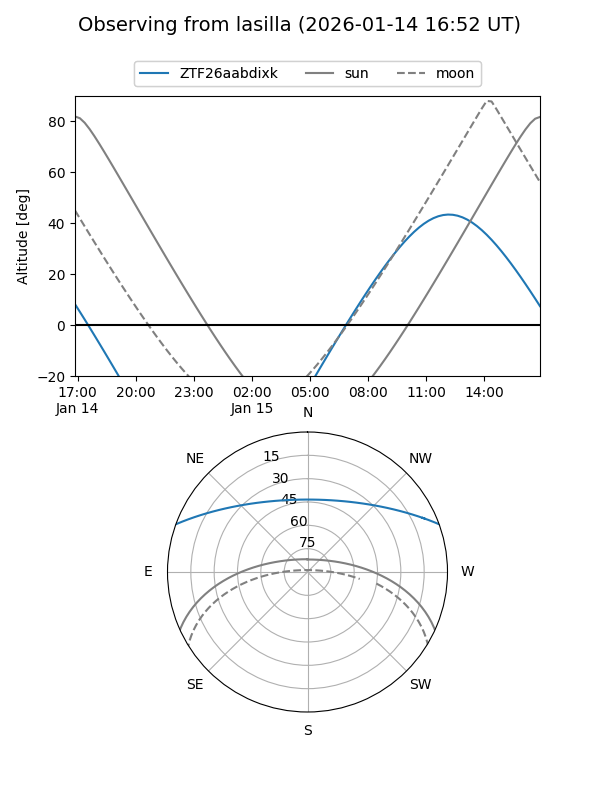
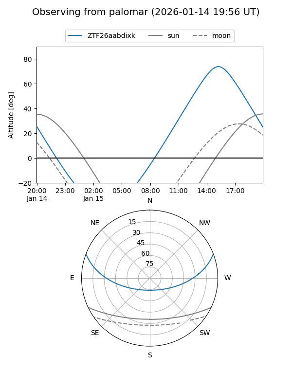

ZTF26aabdixk
Target ZTF26aabdixk at 2026-01-14 14:25
Aliases and brokers:
FINK: link
Lasair: link
ALeRCE: link
alt names
ZTF26aabdixk (ztf,fink_ztf)
Coordinates:
equatorial (ra, dec) = 226.3958,+17.41881
equatorial (HMS+DMS) = 15:05:34.99,+17:25:07.72
galactic (l, b) = (22.5865,+57.59899)
Flags:
Photometry:
last ztfg=19.45, ztfr=19.63
1 ztfg, 1 ztfr detections
Lightcurve

Visibility


Additional plots